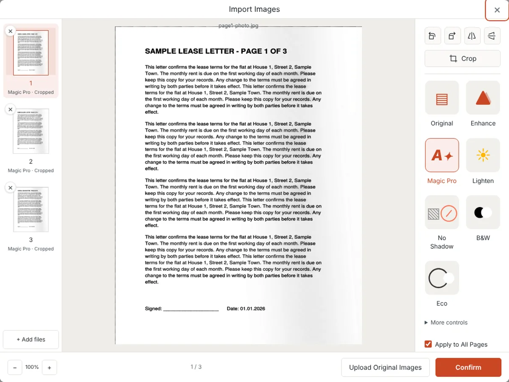
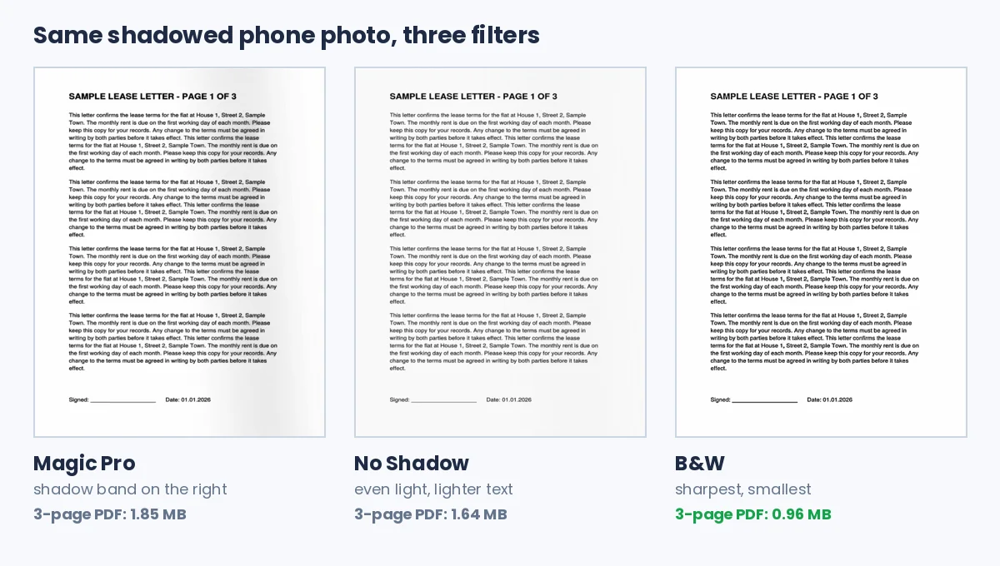

How to Scan Documents on Your Phone for Free (Tested)
To scan documents on your phone for free, use a scanner your phone already has. That means Notes on an iPhone, Google Drive on Android, or a browser scanner on any phone. Lay the page flat in even light, let the app crop it, pick a filter, and save one PDF.
No app on hand? Use the free PDFdukan document scanner in your phone's browser.
Which free scanner is already on your phone?
Most phones already include a free document scanner, so a download is rarely needed. The right one depends on your phone and where you want the file saved.
| Option | Phone | Where the scan goes |
|---|---|---|
| Notes app | iPhone | A PDF inside the note |
| Google Drive | Most Android phones | A PDF or JPG in your Drive |
| Files by Google | Android | A searchable PDF on the phone |
| Camera app | Some Samsung Galaxy models | A saved scan |
| PDFdukan scanner | Any phone with a browser | A PDF or JPG on your device |
Android has no single scanner every phone shares. PFU, the maker of ScanSnap, notes that most Android phones lack a scan option in the camera app. Google Drive comes preinstalled on most of them.
How to scan documents on your phone for free on an iPhone
An iPhone scans documents through the Notes app, and Apple's own guide lists five steps.
- Open Notes and open a note.
- Tap the Attachments button, then tap Scan Documents.
- Hold the phone so the page is on screen. Adjust Flash or Filters if needed.
- Keep the phone steady in Automatic mode, or switch to manual and tap Take Picture, then Keep.
- Scan more pages, then tap Done. The scan is saved as a PDF in the note.
Automatic mode captures the page once the iPhone detects its edges. Manual mode lets you drag the corners before you keep the scan.
How do you scan a document on Android?
Android phones scan documents through the Google Drive app, which saves a PDF straight to Drive. Google's help page gives these steps:
- Open Google Drive and tap the Camera icon at the bottom right.
- Point the camera at the page. A blue line shows the crop area.
- Take the photo in Manual or Auto capture.
- Adjust with Crop & Rotate, Filter or Clean, and tap Add for more pages.
- Tap Done, name the file, choose .pdf or .jpg, and tap Save.
The Clean tool erases stains and fingers from the scan. Google also offers a Drive scan widget for the home screen, which opens the scanner in one tap.
How do you scan without installing an app?
A browser-based scanner works on any phone, including work phones where you cannot install apps. The PDFdukan scanner runs on the web page, with no download and no account.
We tested it with three photos of a printed letter, each taken at an angle on a wooden table. A shadow fell across one side of every page.
The scanner found each page's edges and straightened all three pages automatically. Import, cropping and export all ran in the browser, and the browser sent zero upload requests.

Which filter gives the clearest scan?
For printed text with shadows, the B&W filter gave the clearest result in our test. The filter matters more than the app.
The default Magic Pro filter kept a gray shadow band on the right of each page. No Shadow evened out the light, but the text came out lighter. B&W removed the shadow and kept the letters dark and sharp.

Text stayed machine-readable either way. Tesseract OCR read the B&W and Magic Pro versions with the same 0.9% character error rate. Use color filters for photos, stamps and ID cards, where color carries meaning.
How big will the scanned PDF be?
A scanned PDF's size depends mostly on the quality setting and the filter. Our three-page letter ranged from under 1 MB to over 4 MB.
| Filter | High | Medium | Low |
|---|---|---|---|
| Magic Pro | 4.10 MB | 1.85 MB | 1.38 MB |
| No Shadow | 3.55 MB | 1.64 MB | 1.24 MB |
| B&W | 0.96 MB | 0.96 MB | 0.96 MB |
Our first B&W run came out at 4.22 MB, larger than color. The scanner was saving pure black-and-white pages as photo-style JPEGs. We changed it to save them as lossless PNG, which cut the file by 77% with the same OCR result.
For a portal with a small upload limit, pick B&W for text pages or Medium quality for color. If the file is still too large, run it through PDF compression.
How do you get a clean, readable scan?
A clean phone scan comes from the setup, not the app. Light, background and angle decide whether the text stays sharp.
PFU's advice matches what our test photos showed. Use bright, even light with no glare or harsh shadow. Put a white page on a dark, flat surface so the scanner can find the edges. Hold the phone parallel to the page and keep your hands steady.
A shadow from your own hand or phone is the most common problem. Light from the side usually works better than a lamp directly overhead. Retake a blurry page instead of trying to fix it with filters.
Where does your scan end up?
Where a scan ends up depends on the app, and the difference matters for tax forms, leases and IDs. Some apps keep files on the phone, while others store or process them in the cloud.
Google Drive saves scans to your Drive account. Adobe says Adobe Scan files are encrypted and stored in Adobe Document Cloud. Ademero says its web scanner sends searchable-PDF jobs to Google Cloud for processing, then discards them.
Some tools never go online. FairScan, an open-source Android scanner, does not even request internet permission, according to its developer. The PDFdukan scanner works the same way for scanning: the photos stay in your browser.
When is a phone not enough?
A phone is not enough when you scan large batches every day. PFU notes that phones are slower and less precise than desktop scanners, though far more portable.
Free web tools can also cap your work. Ademero, for example, limits each PDF to 10 pages and about 10 MB. For a long contract or a box of receipts, a sheet-fed scanner saves hours. For a lease, a form or a few receipts, your phone is enough.
Frequently Asked Questions
What is the easiest way to scan documents on your phone for free?
The easiest way is the scanner your phone already has: Notes on an iPhone or Google Drive on Android. Both save a PDF in a few taps. On any other phone, a browser scanner needs no install.
Can a phone scan several pages into one PDF?
Yes, all of these scanners combine pages into one PDF. Add each page before tapping Done or exporting. Check the page order before you send the file.
Is a phone scan good enough for official forms?
A phone scan is usually good enough when it is flat, sharp and fully in frame. Check that names and numbers are readable before you upload. Scan ID cards in color.
How do I turn a phone scan into a searchable PDF?
A scanned PDF becomes searchable after OCR adds a text layer. Google Drive saves searchable PDFs, according to Google. For other scans, use our searchable PDF converter.
Why is my scan blurry?
A blurry scan usually comes from a moving phone or a dirty lens. Clean the lens, hold the phone steady, and retake the page. No filter can restore detail the camera never captured.
Does the PDFdukan scanner add a watermark?
No, the PDFdukan scanner adds no watermark or logo to your pages. The PDF looks exactly like the cropped scan. Check the first page of any app's output before you send it.